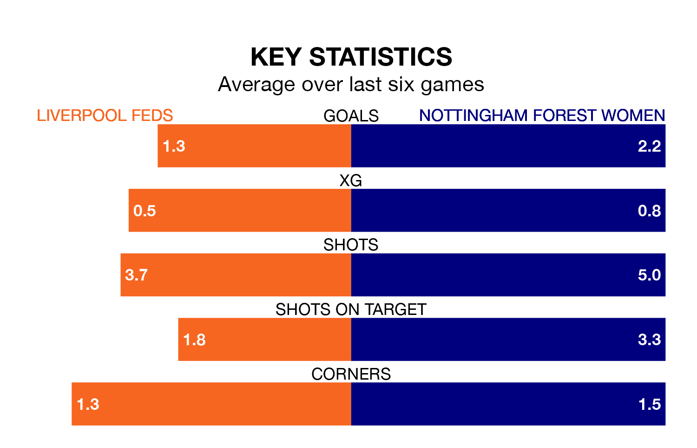

Nottingham Forest Women face Liverpool Feds on Sunday seeking to protect their long unbeaten run in the Women's National League Premier Division North.
Nottingham Forest are unbeaten in five, with three wins and two draws, ahead of the 2pm kick-off.
They face a Liverpool Feds team who have won two and drawn two over the same number of games.
With 37 goals in 13 games so far this season, Nottingham Forest are the league's joint-highest scorers with 2.8 goals per game. And they are conceding fewer than average, letting in 11 goals at a rate of 0.8 per game.
Liverpool Feds, meanwhile, are below average scorers, with 1.6 goals per game, compared to a league average of 1.8. They have conceded 2.0 goals per game.
The visitors are second in the table after 13 games, of which they have won eight and drawn two, earning 26 points.
The home team are four places behind Nottingham Forest in sixth, with five wins and four draws putting them on 19 points.
In the last three years, Liverpool Feds and Nottingham Forest have played each other on three occasions. Nottingham Forest won all of them.
Their last meeting was on October 15, when Nottingham Forest won 5-0 at home.
Liverpool Feds's last match was on February 11, a 2-1 win against Fylde Women.
Nottingham Forest beat Fylde Women 6-0 last time out, on February 4.
Updated: 13:30 (UTC), 12/02/24